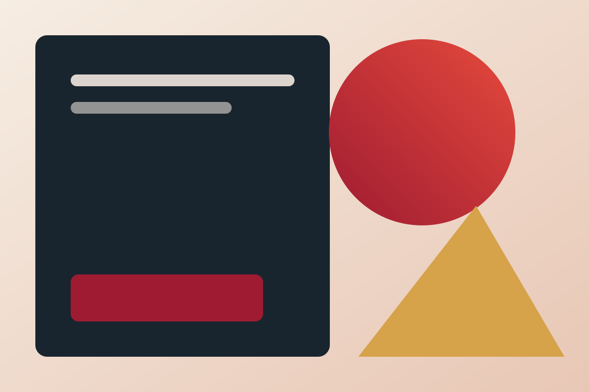

Elena Valery
Senior Design Editor
Elena writes about editorial systems, accessible interfaces, and the quiet mechanics of durable design.
Senior Design Editor
Elena writes about editorial systems, accessible interfaces, and the quiet mechanics of durable design.
Elena studies how typography, interaction, and documentation shape a reader's confidence in an interface. Her work focuses on systems that stay useful after the polished launch state has passed.
She leads editorial reviews for SayUI Journal and works with product teams to turn visual decisions into stable, accessible component contracts.
Essays about editorial rhythm, accessibility, and component architecture.

A practical study of rhythm, hierarchy, and restraint in interfaces built for sustained reading.
Examples and boundaries turn a collection of selectors into a public contract people can trust.
Narrow columns and incomplete content reveal more than a perfectly controlled component gallery.
Line length is a relationship between type, space, and attention rather than a fixed universal number.